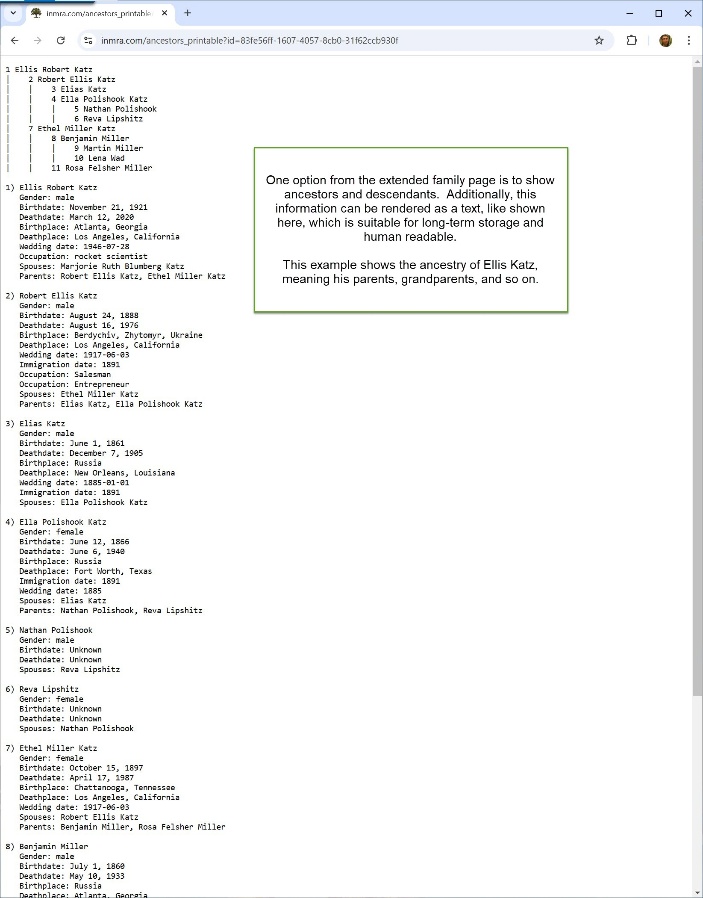
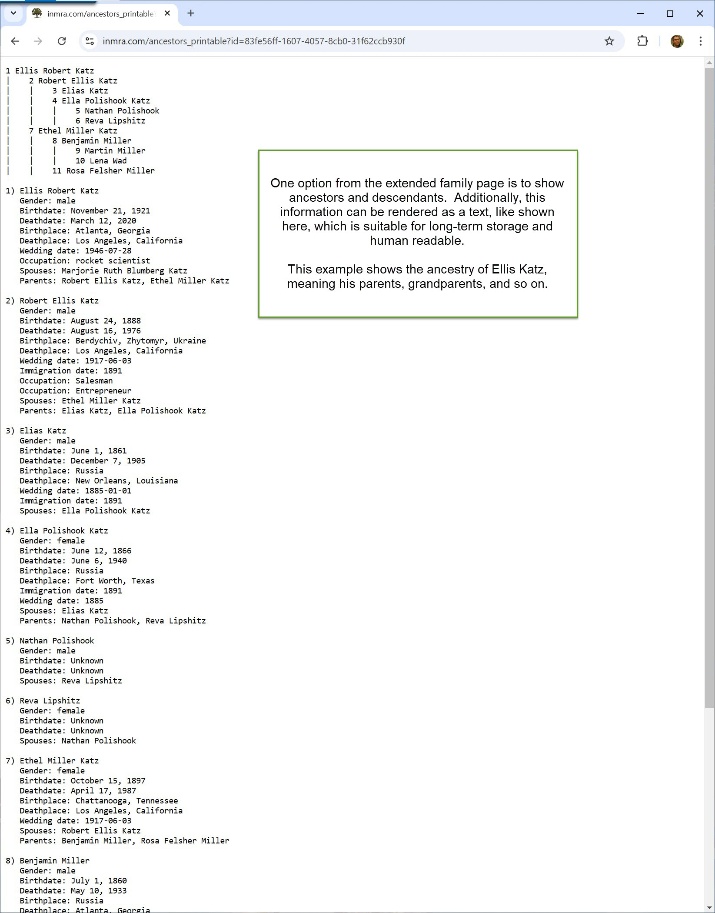

December 23, 2024
Memoria is a family tree web application.
Site: https://inmra.com
Download: Memoria
- Accessible - Pages are designed to consider the needs of
the disabled
- Performant - Navigating the site will typically be very
fast
- Sustainable - Easy to maintain and run, inexpensive to run
(currently costs $0 / year)
- Designed for public viewing - Information on living
persons is kept private, requiring authentication
- Secure - System is regularly inspected for security
vulnerabilities, and these are corrected immediately
if found
- Versatile and flexible - Each person's biography is
capable of high flexibility in styling and length, and
may contain any number of pictures and videos
- Quality - System is built with long-term thinking from the
ground-up by a highly-experienced expert
developer
 
